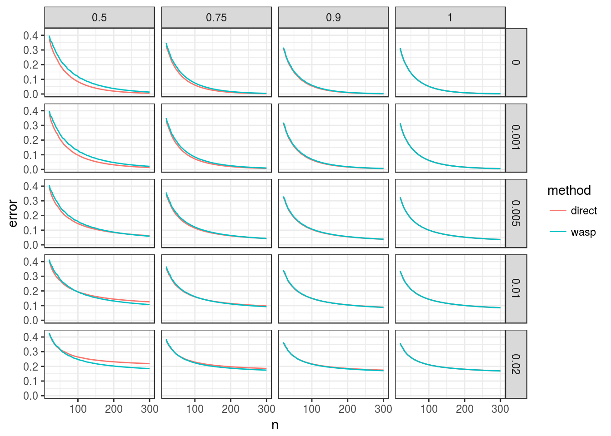

I use the oracle misclassification error rate code to calculate whether it is better to account for bias or to remove the bias-causing alleles.
Suppose that \(h\) is the ratio of the probability of a minor read mapping correctly to the probability of referance read mapping correctly. We could either (i) account for the bias directly or (ii) take the approach of WASP and remove reads based on how they map using the alternative allele.
Which is better?
Via a back-of-the-envelope calculation, I think WASP will decrease the sample size by a multiplicative factor of \[ \frac{h}{\alpha + h(1 - \alpha)} \]
Derivation:
Suppose there are \(n_0\) total reads that should map to the correct location. Suppose we have allele frequency \(\alpha\) and bias \(h\). Suppose that we always map \(A\) correct (we can do this without loss of generality by just scaling \(n_0\) accordingly). Then we observe \(\alpha n_0\) A’s and \(h(1 - \alpha)n_0\) a’s. Then we have the observed sample size is \[ n = \alpha n_0 + h(1 - \alpha)n_0 \\ n_0 = \frac{n}{\alpha + h (1 - \alpha)}. \]
If we do the WASP procedure, we still observe \(h(1 - \alpha)n_0\) a’s, but now we observe \(h\alpha n_0\) A’s as well. So that means the new sample size is \[ h\alpha n_0 + h(1 - \alpha)n_0 \\ = \frac{hn}{\alpha + h(1 - \alpha)}. \]
library(mupdog)
alpha <- 0.7
ploidy <- 6
dist <- dbinom(x = 0:ploidy, size = ploidy, prob = alpha, log = FALSE)
hseq <- c(0.5, 0.75, 0.9, 1)
odseq <- c(0, 0.001, 0.005, 0.01, 0.02)
nseq <- round(seq(20, 300, length = 100))
dat <- expand.grid(h = hseq, n = nseq, od = odseq)
dat$n_new <- round(dat$n * dat$h / (alpha + dat$h * (1 - alpha)))
dat$h_new <- 1 ## completely removes bias
seq <- 0.01
err_wasp <- rep(NA, nrow(dat))
err_me <- rep(NA, nrow(dat))
for (index in 1:nrow(dat)) {
err_me[index] <- oracle_mis(n = dat$n[index], ploidy = ploidy,
seq = seq, bias = dat$h[index],
od = dat$od[index], dist = dist)
err_wasp[index] <- oracle_mis(n = dat$n_new[index], ploidy = ploidy,
seq = seq, bias = dat$h_new[index],
od = dat$od[index], dist = dist)
}
dat$wasp <- err_wasp
dat$direct <- err_melibrary(tidyverse)
longdat <- gather(data = dat, key = "method", value = "error", wasp:direct)
ggplot(data = longdat, mapping = aes(x = n, y = error, color = method)) +
geom_line() +
facet_grid(od ~ h) +
theme_bw()
Oracly, it’s better to use WASP in overdispersed SNPs and better to directly account for the bias in non-overdispersed SNPs. My guess is that this is because the SNPs bunch up if there is too much bias, and this is particularly bad if the SNPs are overdispersed. But with less bias they are less bunched up.
## Negative difference means direct has lower oracle rate.
dat$diff <- dat$direct - dat$wasp
ggplot(data = dat, mapping = aes(x = n, y = diff)) +
geom_line() +
facet_grid(od ~ h) +
theme_bw() +
geom_hline(yintercept = 0, lty = 2, col = 2) +
ggtitle("difference of oracle error rates") +
theme(strip.background = element_rect(fill = "white"))In the Shirasawa dataset, most of the estimates of the bias were between 0.001 and 0.02.
This R Markdown site was created with workflowr